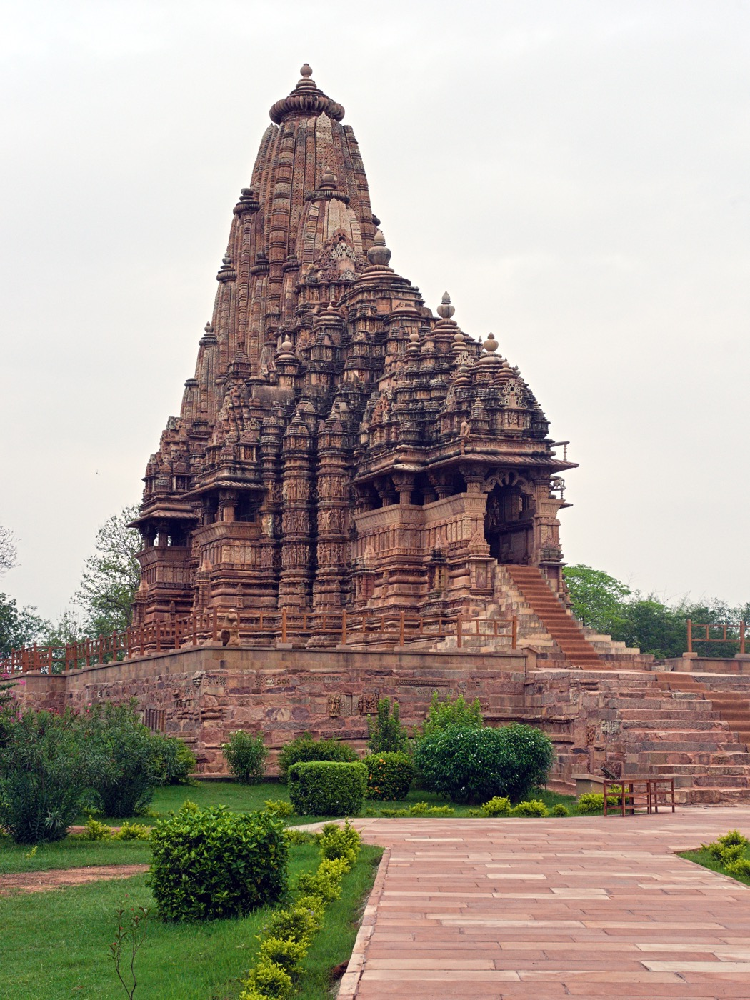
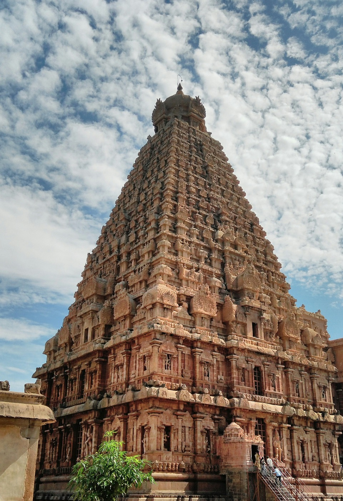
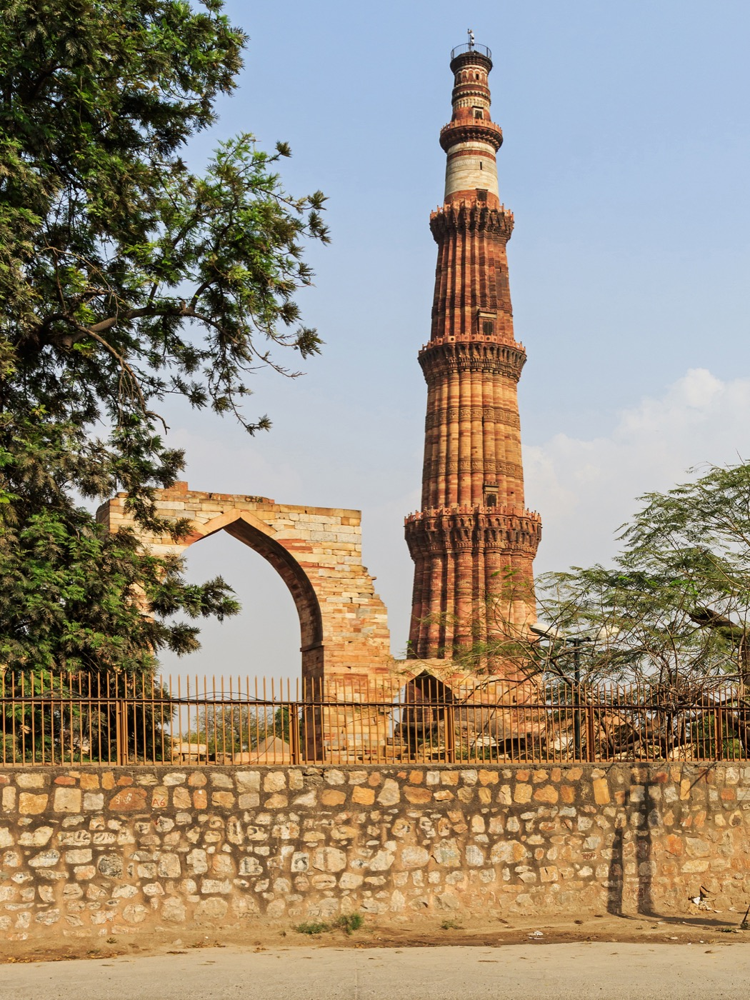
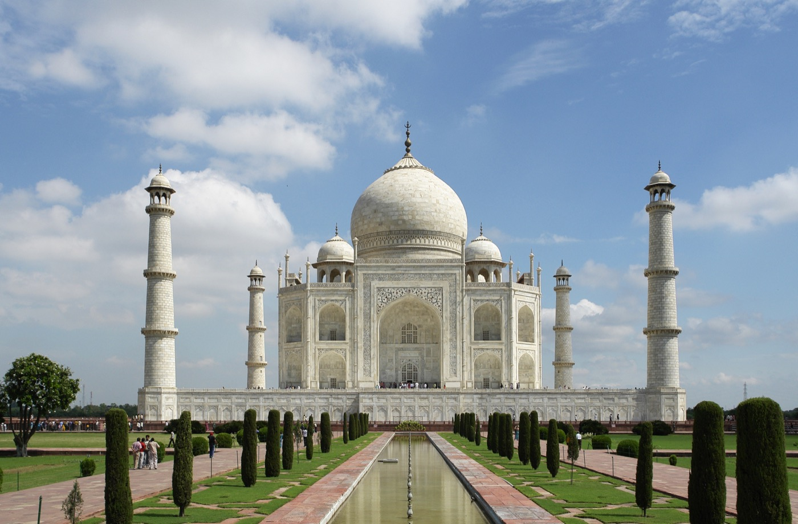
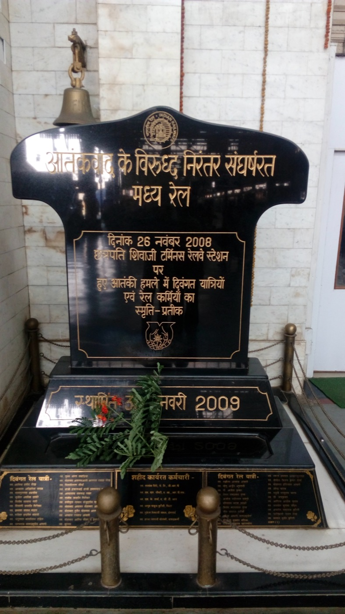

THE LIVING GEOMETRY OF INDIA
Indian architecture is not merely masonry; it is a sacred metaphysical dialogue between cosmic consciousness, natural topography, and human craftsmanship. Across five thousand years, four major architectural streams merged to shape one of the richest built environments on Earth.

Fractal Harmonic Symmetry
Sacred Hindu Vastu Shastra & Monoliths
Rooted in the Vedic treatises of Vastu Shastra and Shilpa Shastra, Hindu temple architecture reflects the cosmos. The layout is derived from the Vastu Purusha Mandala—a sacred geometric grid that aligns structural energy with cardinal directions.
The evolution achieved monumental triumphs in two primary styles: the Dravidian style of the South (pyramidal tiered vimana, monolithic granite, and massive rayagopuram gateways seen at Brihadisvara and Hampi) and the Nagara style of Central and Northern India (curvilinear mountain-like shikharas with cascading miniature spires at Khajuraho). In rock-cut architecture like Kailasa Temple at Ellora, master craftsmen chiseled an entire temple complex downward out of solid basalt cliffs with zero margin for structural error.


Persian Engineering & Sultanate Geometry
With the establishment of the Delhi Sultanate and Deccan Sultanates, the architectural grammar of the Indian subcontinent was transformed by Arcuated (Arch and Vault) construction imported from Persia and Central Asia.
Instead of relying strictly on heavy stone beams, Persian master masons introduced the true pointed arch, the keystone, and revolutionary squinch arches that allowed square rooms to support colossal circular domes. At Gol Gumbaz in Bijapur, eight intersecting Persian arches supported the second largest unsupported dome on Earth. At Qutub Minar, Persian calligraphic bands and muqarnas corbeling blended with indigenous red sandstone carving.
The Mughal Golden Age & Paradise Gardens
Under Akbar, Jahangir, and Shah Jahan, Indo-Islamic architecture blossomed into supreme imperial elegance. The Mughals combined Timurid Persian symmetry with Indian stonecraft, Gujarati brackets, and Rajasthani chhatris.
The hallmark of Mughal planning was the Charbagh (Four-fold Paradise Garden), bisected by flowing water channels symbolizing the rivers of milk, honey, wine, and water described in Persian paradisiacal poetry. Shah Jahan elevated marble to poetry: the Taj Mahal utilized the double-shell bulbous dome, optical illusion entasis, and Pietra Dura (Parchin Kari)—the Florentine and Persian lapidary art of embedding semi-precious gems into polished white Makrana marble.


British Colonial & Indo-Saracenic Synthesis
During the British Raj, European imperial architects sought to legitimize their rule by adopting indigenous Indian architectural motifs, giving birth to the Indo-Saracenic Style.
Pioneered by architects like Robert Chisholm, Sir William Emerson, and George Wittet, this style fused Western Victorian Gothic Revival, Neoclassicism, and industrial cast iron with Mughal domes, Rajasthani jharokha balconies, and Gujarati jali screens. In New Delhi, Sir Edwin Lutyens invented the Delhi Order of stone columns and topped Rashtrapati Bhavan with a monumental copper dome modeled directly on the 3rd century BCE Buddhist Great Stupa of Sanchi.
Structural Vocabulary Across the Four Eras
A side-by-side technical breakdown designed for architectural analysis and academic examination review.
| Feature | Hindu / Vedic | Persian / Sultanate | Imperial Mughal | British Indo-Saracenic |
|---|---|---|---|---|
| Primary Structural System | Trabeated (Post & Lintel, Corbeling) | Arcuated (Pointed True Arches, Squinches) | True Arch, Vault & Double Domes | Cast Iron & Concrete with Stone Masonry |
| Crown Element | Amalaka disc & Kalasha pot finial | Hemispherical dome & Minaret spire | Bulbous double dome with inverted lotus | Classical rotunda dome or Buddhist stupa |
| Surface Ornamentation | Deep stone figural sculptures, deities, apsaras | Arabic calligraphy, geometric tile, stalactites | Pietra Dura gemstone inlays, jali screens | Gargoyles, heraldic lions, Mughal chhatris |
| Spatial Geometry | Vastu Purusha concentric square grid | Central prayer hall aligned with Qibla | Bilateral axial symmetry & Charbagh | Monumental axial avenues, cross axes |
| Iconic Landmark | Brihadisvara & Kailasa Ellora | Qutub Minar & Gol Gumbaz | Taj Mahal & Fatehpur Sikri | Victoria Memorial & CST |